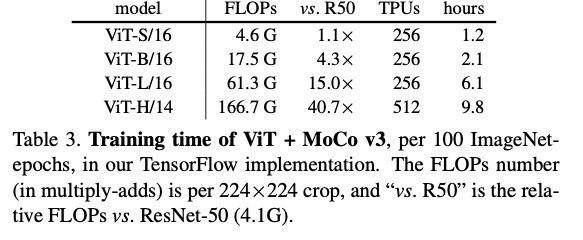

1. Read the title and make an opinion of what’s in the paper (e.g., the area, the task)
An Empirical Study of Training Self-Supervised Vision Transformers
Aren’t all papers empirical? I don’t see the point of saying that in the title. Yet training self supervised vision transformers is very informative. I’m interested in ViT’s and so this paper looks useful.
2. Read the abstract well and form a hypothesis of
- What’s new in the paper?
- Do you have a clear overview about what the paper is all about?
This paper does not describe a novel method.
Quite a bold first sentence I’ve seen from abstracts.
it studies a straightforward, incremental, yet must-know baseline given the recent progress in computer vision: self- supervised learning for Vision Transformers (ViT)
So this should have a new view into actually building self supervised systems for ViTs.
investigate the effects of several fundamental components for training self-supervised ViT
I expect to see components such as the loss function, and augmentation techniques. From the abstract it seems that stability is very important in making use of SSL for ViTs.
We discuss the currently positive evidence as well as challenges and open questions.
I wonder what the open questions will be and how much of an impact they may have on good performance.
3. Look at the images and extract a set of “questions” about what is not clear about their method from the images. Now your job is to answer these questions by reading the paper.
Here is the pytorch pseudocode:
It looks fairly simple, with a augmentation, passing through the models, updating the loss. The contrastive Loss I would have to understand better.
The training curves look that they don’t produce great results, as the max is at 50%. I don’t know if this is Top-1 accuracy or not:
4. Read the method aiming to answer your “questions” about the paper. Focus on understanding only the things relevant for the story (i.e., to understand the contribution).
There is instability in ViT training which they mark as being a potential of not catastrophic failure but 1-3% degradation. They can be countered however, by freezing the patch projection layer in the ViT.
They also note:
This reveals that self-supervised ViT can learn strong representations without the positional inductive bias, but it also implies that the positional information has not been sufficiently exploited.
Which is an interesting observation.
MoCo v3
MoCo is a framework with two transformers that learn by learning a representation so the query of one is able to retrieve the corresponding key of the other. This is formulated as the contrastive loss function below:
Our encoder consists of a backbone (e.g., ResNet, ViT), a projection head [10], and an extra prediction head [18]; the encoder has the backbone and projection head, but not the prediction head. is updated by the moving-average of [20], excluding the prediction head.
This training regime takes a significant amount of compute:

They are lucky to compute 256 TPU hours in an hour, but there are probably few people on the planet who can afford similar iteration speed.
5. Read the experiments to convince you that the show results are caused by their claim. Be aware that the experiments highlighted are the best scenarios and are fully hyper-parameter tuned.
Training Time
The TPU implementation also makes it possible to explore the ViT-H model, which takes 9.8 hours per 100 epochs using 512 TPUs. This is a gigantic scale of training: for the 300-epoch ViT-H, this amounts to ∼625 TPU·days, or ∼1.7 TPU·years of training.
This is a bit much in my opinion, making these results only useful for transfer learning: however, they’re posted results are not vastly better than other results from other SSL techniques showing that a change in framework is probably wise.
They do show good results on pretraining with their system, indicating that there is use for pretrained models (as NLP has recently shown).
6. Make sure you answered all your questions. Did the authors convince you that their story has the effect that they claim?
I see their results, however, I still am hesitant of the sheer amount of compute required, which leads me to desire better frameworks for solving these problems. If this is the compute required for images, how will it scale to video? Essentially I think it will not (but I’ve been known to be wrong!).